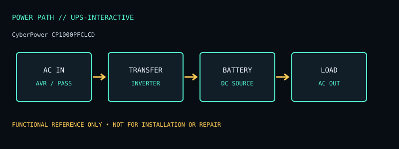

[ LINE-INTERACTIVE UPS // MODEL RECORD ]
CyberPower CP1000PFCLCD
North American pure-sine-wave line-interactive UPS, 1000 VA / 600 W, ten outlets. The specifications below are for this named model and region only; verify the complete product label and matching manual before deployment or service.

ARCHIVAL IDENTIFICATION: Preserve the complete SKU, suffix, region, date code, revision, installed battery part (if present), firmware and physical condition. Similar model names do not establish hardware equivalence.
Specifications, conditions & service
| Catalog subcategory | Line-interactive UPS |
|---|---|
| Topology / power path | Line-interactive UPS with AVR and sine-wave inverter output; switches to battery when utility is outside operating limits. |
| Ratings / output configuration | 1000 VA / 600 W; 120 V North American model. Ten NEMA 5-15R receptacles; manufacturer documentation identifies five battery-backed + surge and five surge-only outlets. |
| Battery / replaceability | User-replaceable sealed lead-acid battery; use the exact CyberPower replacement pack and follow the manual’s battery precautions. |
| Runtime / limits and conditions | Use CyberPower’s CP1000PFCLCD runtime curve at the actual watt load. Runtime is an estimate and changes with load, temperature and battery service condition/age. |
| Interfaces / monitoring | Multifunction LCD, USB and serial communications on documented configuration; compatible PowerPanel software supports monitoring/shutdown. RJ45 data-line protection is not Ethernet network management. |
| Safety / installation caveats | 120 V unit; 600 W output limit. Only the designated battery-backed outlets provide outage power. Maintain clearance, grounding and battery handling requirements in the manual. |
| Model variants / revision checks | Do not confuse CP1000PFCLCD with CP1000AVRLCD or other CP1000 revisions; waveform, outlet groups and battery part differ. Verify exact label and manual. |
Field service / archive notes
- Record labels and connector layout before installation; document load, input conditions, measured behavior and test date separately from manufacturer-rated values.
- Never open energized mains equipment. Battery devices can retain dangerous voltage or high fault current; follow the manufacturer’s replacement and recycling procedure.
- Inspect enclosure, cord, plugs, grounding, indicators, alarms and battery condition. Quarantine damaged, swollen, leaking or heat-affected equipment.
- Network-management appliances should be isolated, updated where supported and configured with non-default credentials; do not expose legacy management interfaces directly to the public internet.
Manufacturer references
- Manufacturer product listing — CyberPower CP1000PFCLCDModel identity and product-family specification reference. Confirm exact regional SKU against the chassis label.
- Manufacturer manual / support documentationConsult the version matching the exact SKU. Runtime references are load- and condition-dependent estimates where supplied, never a guarantee for a particular aged unit.